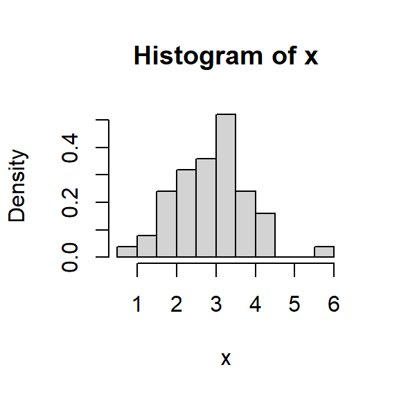

XS3310 Teoría Estadística
I Semestre 2024
Escuela de Estadística, UCR.
Se tienen datos de sobrevivencia de 16 ratones luego de una cirugía de prueba: 9 ratones en el grupo control y 7 ratones en el grupo de tratamiento.
| Grupo | Tiempo de sobrevivencia(días) | Media |
|---|---|---|
| Tratamiento | 94,197,16,38,99,141,23 | 86.86 |
| Control | 52,104,146,10,51,30,40,27,46 | 56.22 |
¿Podemos decir que el tratamiento es efectivo?
En estadística, resolvemos esa pregunta estimando \(\bar{X}- \bar{Y} = 30.63\). El problema es cómo calcular la variabilidad, ¿podemos suponer lo mismo de siempre?
Tenemos dos opciones:
la primera utilizar el teorema del límite central (teoría asintótica).
La segunda es utilizar el estadístico:
\[T = \frac{\bar{X}- \bar{Y}}{\sqrt{\hat{ee}_{\bar{X}}^2 + \hat{ee}_{\bar{Y}}^2}}\] - ¿Cuál es el problema? En el caso asintótico, necesitamos de una muestra grande, y en el segundo caso, la distribución de \(T\) NO es conocida (podríamos usar la aproximación de Satterthwaite, pero eso sería solo una aproximación).
Definición: La inferencia estadística es el procedimiento de producir afirmaciones probabilísticas sobre alguna (o toda) parte del modelo estadístico.
Definición: La estadística paramétrica consiste en realizar inferencia cuando el modelo estadístico puede ser representado por medio de uno o varios (finitos) parámetros desconocidos de una distribución.
Definición: dos definiciones informales de la estadística no paramétrica:
Ejemplo:
Una empresa produce componentes eléctricos y el interés es medir la vida útil del componente (en años). Suponemos que la vida útil de los componentes sigue una distribución exponencial con parámetro \(\beta>0\).
\[f(y)= \begin{cases}\frac{1}{\beta} e^{-y/\beta}, & 0 < y < \infty, \\ 0, & y \leq 0, \end{cases}\]
Definición: Un modelo estadístico consiste en una identificación de variables aleatorias de interés, la especificación de una distribución conjunta, o una familia de posibles distribuciones conjuntas para unas variables aleatorias observables, la identificación de uno o varios parámetros de dichas distribuciones son desconocidas.
Ejemplos: Para el caso de componentes eléctricos, se tienen las variables aleatorias \(Y_1,...,Y_n\) cuya distribución conjunta es:
\[f(y_1,...,y_n|\beta)= \prod_{i=1}^n f(y_i|\beta),\]
en donde \(f(y_i)\) es la densidad de la distribución exponencial con parámetro \(\beta>0\), i.e.
\[f(y)= \begin{cases}\frac{1}{\beta} e^{-y/\beta}, & 0 < y < \infty, \\ 0, & y \leq 0. \end{cases}\]
La familia de posibles distribuciones conjuntas es \[ \left\lbrace f(y_1,...,y_n|\beta), \beta >0 \right\rbrace. \]
Ejemplos:
-El ejemplo de componentes eléctricos corresponde a estadística paramétrica.
\[\hat{P}(A) = \frac{1}{n}\sum_{i=1}^{n} I_A(X_i),\] para \(A \subseteq \mathbb{R}\) y \(I_A(X_i)\) es la función indicadora definida como:
\[I_A(X_i)=\left\lbrace \begin{aligned} 1 & \text{, si } X_i \in A, \\ 0 & \text{, si } X_i \notin A. \end{aligned} \right.\]
Ejemplo:
[1] 1.6393935 3.7942324 0.5696820 3.4537757 2.5820120 0.3386898 3.6935743
[8] 2.9176752 1.0788570 1.2806120[1] 0.2[1] 0.3[1] 0.2[1] 0.3Ejemplo:
\(\hat{P}\) es la distribución empírica de la muestra \(X_1,...,X_n\).
\(\hat{P}\) puede pensarse como una distribución que pone masa \(1/n\) en cada observación \(X_i\) (para valores que ocurren más de una vez la masa será un múltiplo de \(1/n\)). Entonces, \(\hat{P}\) es una distribución de probabilidad discreta con un espacio efectivo de muestreo \({X_1, \dots, X_n}\).
Resultados teóricos:
Sea \(A \subseteq \mathbb{R}\) (tal que \(P(A)\) está definido), entonces tenemos: \(\hat{P}(A) \xrightarrow{p} P(A)\) cuando \(n \rightarrow \infty\).
Este resultado es una consecuencia directa de La Ley de los Grandes Números, ya que:
\[n \hat{P}(A) = \sum_{i=0}^{n} I_A(X_i) \sim Bin(n, P(A))\]
por lo que \(\hat{P}(A)\) tiende a su valor esperado \(P(A)\) cuando \(n \rightarrow \infty\). Este resultado puede formalizarse mediante:
\[\sup_{A\in I}|\hat{P}(A)-P(A)| \rightarrow 0 \quad \text{cuando} \quad n \rightarrow \infty\] donde \(I\) es el conjunto de intervalos en \(\mathbb{R}\). En otras palabras, la distribución \(P(A)\) puede ser aproximada por \(\hat{P}(A)\) igual de bien para toda \(A\in I\).
\[\mu = E(X)=\int x f(x)dx=\int x P(x) dx.\] Es decir, en general \(\theta=T(P)\).
De la población \(P\), extraemos una muestra aleatoria: \(X_1,...,X_n\).
Consideremos un estimador \(\hat{\theta}=s(X_1,...,X_n)\) de \(\theta\).
El objetivo de la inferencia estadística consiste en:
Definición 5.1: Una muestra aleatoria de tamaño \(n\), \(X_1^*,...,X_n^*\) extraída de la distribución empírica \(\hat{P}\), es denominada como una muestra de bootstrap.
Observación:
Note que esto significa que las \(n\) observaciones se selecciona con reemplazo de la distribución \(\hat{P}\), o sea los datos originales \(\left\lbrace X_1,...,X_n \right\rbrace\).
Por eso la muestra de bootstrap también se le conoce como muestra remuestreada.
Esto nos lleva al siguiente proceso:
\(X = (X_1, \dots, X_n)^T\) es una muestra aleatoria de una distribución \(P\).
Seleccione \(i_1, \dots, i_n\) independientemente de una distribución uniforme en \({1, \dots, n}\).
Ahora haga \(X_{j}^{*} = X_{i_{j}}\) y \(X^* = (X^*_1, \dots, X^*_n)^T\).
El procedimiento consiste en:
\[\hat{P}\left(\hat{\theta}(A)\right) = \frac{1}{B}\sum_{b=1}^{B} 1_A\left(\hat{\theta}^{*(b)}\right)\]
para conjuntos apropiados de \(A \subseteq \mathbb{R}^p\) (si \(\hat{\theta} \in \mathbb{R}^p\)).
\[P(\hat{\theta} \in A) = \hat{P}(\hat{\theta}^{*} \in A).\]
Sea \(\hat{\theta}\) un estimador de \(\theta\) y suponga que queremos conocer el error estándar de \(\hat{\theta}\). Un error estándar estimado de bootstrap se puede obtener con el siguiente algoritmo:
\[\widehat{\operatorname{ee}}_{boot} = \sqrt{\frac{1}{B-1}\sum_{b=1}^{B}\left(\hat{\theta}^{*(b)}-\hat{\theta}^{*(.)}\right)^2}\]
donde \(\hat{\theta}^{*(.)} = \frac{1}{B}\sum\limits_{b=1}^{B}\hat{\theta}^{*(b)}\).
Suponga que queremos estimar un parámetro \(\theta = t(P)\) con el estadístico \(\hat{\theta}= s(X)\). El sesgo de un estimador \(\hat{\theta}\) está definido como:
\[\operatorname{sesgo}(\hat{\theta})= E(\hat{\theta})-\theta\]
Si sustituimos \(P\) por la distribución empírica \(\hat{P}\), entonces obtenemos el estimador bootstrap del sesgo:
\[\widehat{\operatorname{sesgo}}(\hat{\theta})= \operatorname{sesgo}^*(\hat{\theta}^*) = E(\hat{\theta}^*)-\theta^*\] donde \(\theta^* = T(\hat{P})\). Note que \(\theta=T(P)\) y \(\theta^*\) pueden ser diferentes.
\[\hat{\theta} \pm z_{1-\alpha/2} \hat{\operatorname{ee}}_{boot}(\hat{\theta})\]
De las muestras bootstrap \(X^{*(b)}\), \(b=1,...,B\), se calcula: \[T^{*(b)}=\frac{\hat{\theta}^{*(b)}-\hat{\theta}}{\hat{\operatorname{ee}}\left( \hat{\theta}^{*(b)}\right)},\] donde \(\hat{\theta}^{*(b)}\) y \(\widehat{\operatorname{ee}}\left(\hat{\theta}^{*(b)}\right)\) es el estimador y su error estándar, respectivamente, calculado con la muestra de boostrap \(b\). Note que su error estándar no está disponible (se debe hacer otro bootstrap para aproximarlo).
De los valores \(T^{*(b)}\), podemos estimar el valor crítico \(t_{\alpha/2}\) como \(\hat{t}_{\alpha/2}\) tal que: \[\frac{1}{B} \sum_{b=1}^{B} 1 {[ T^{*(b)} \leq \hat{t}_{\alpha/2} ]} \approx \alpha/2.\] Entonces: \[\left[ \hat{\theta} + \hat{t}_{\alpha/2} \hat{\operatorname{ee}}_{boot}(\hat{\theta}), \hat{\theta} + \hat{t}_{1-\alpha/2} \hat{\operatorname{ee}}_{boot}(\hat{\theta}) \right]\]
\[\hat{P}^*\left(\hat{\theta}^*\leq \hat{\theta}_{inf}\right)=\frac{1}{B} \sum_{b=1}^{B}1\left[\hat{\theta}^{*(b)} \leq \hat{\theta}_{inf}\right]\approx \alpha/2\]
\[\hat{P}^*(\hat{\theta}^* \geq \hat{\theta}_{sup}) = \frac{1}{B} \sum_{b=1}^{B} 1\left[\hat{\theta}^{*(b)} \geq \hat{\theta}_{sup}\right] \approx \alpha/2\]